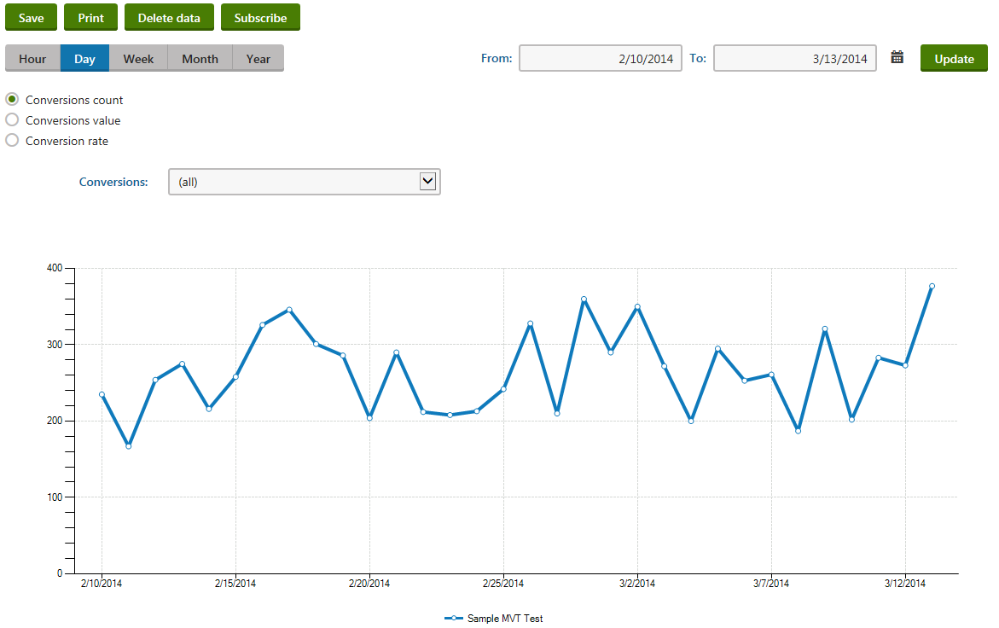

Analyzing MVT test results
You can analyze MVT test results in the MVT tests application.
To access the MVT testing reports:
Open the MVT tests application.
Edit (
 ) an MVT test.
) an MVT test.Switch to the Reports tab.

Analyzing MVT test data
Kentico EMS required
Features described on this page require the Kentico EMS license.
Use the Conversions selector to view the statistics of individual conversion types. The system logs all conversion hits generated by visitors who have passed through a page where an MVT test is running. If there are many conversions defined on your website, only those that can somehow be affected by the differences between the tested content combinations will have relevant data.
The reports show data in three formats:
The line charts show the progress of conversion statistics over time and display combined data for all of the tested combinations.
The bar graphs contain details for individual units of time according to the selected report type (hours, days, months etc.).
The table located between the graphs shows the data logged for specific combinations (both for the time period currently displayed by the report and the entire duration of the test).
The following reports are available for MVT testing:
|
Report name |
Description |
|
Overview |
This report can be used to view the progress of the primary metrics measured for the site's MVT tests from a single location. |
|
Conversions count |
Displays the number of conversion hits logged for the selected MVT test during the specified time interval. In the bar graph, the number of conversion hits is divided into categories that represent individual content combinations. This allows you to compare the tested combinations and determine which one generated the most conversions (in absolute terms). |
|
Conversions value |
Displays the sum of the conversion values logged for the selected MVT test during the specified time interval. In the bar graph, the conversion values are divided into categories that represent individual content combinations, which allows you to determine which one generated the highest total conversion value. This way you can easily evaluate the results of the MVT test when using weighted conversions that have a different level of importance. |
|
Conversions rate |
Used to indicate how many visitors who access the tested page perform a conversion. The conversion rate is calculated as the amount of logged conversion hits divided by the total number of visitors on the given page. If you select the (all) option from the Conversions drop‑down list, then the rate will be measured for all possible conversions, i.e. as the percentage of visitors who generated at least one conversion hit of any type. The conversion rate in the bar graph is displayed for individual content combinations. This allows you to compare the tested combinations and determine which one encouraged the highest share of its visitors to perform a conversion. |
|
Conversions by combinations |
Displays details about the number of conversion hits logged for individual content combinations defined on the page associated with the selected MVT test. You can select the combination that you wish to evaluate from the Combinations drop‑down list. If the MVT test is used for multiple culture versions of the page, you can also specify the culture. The hits logged for the chosen combination are divided into categories that match individual conversions. This allows you to easily measure which conversions are performed most commonly by visitors assigned to the selected content combination. |
Reports for individual MVT tests
You can view the reports while working with the tested page in the Reporting application:
Open the Reporting application
Select the MVT testing tree item and switch to the Reports tab.
The same options are available as described for the web analytics interface, but statistics are only displayed for the currently edited MVT test.